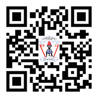

Introduction
The English Pupil’s Book Standard Four has been prepared in accordance with the 2023 English Language Syllabus for Primary Education, Standards III–VI, issued by the Ministry of Education, Science and Technology. This textbook is the Third Edition, improved from the Second Edition of 2021 of the English Pupil’s Book Standard Four, published by TIE in accordance with the 2016 Basic Education Syllabus for Standard IV.
This textbook consists of eleven units that focus on skills such as Developing vocabulary, Expressing quantity, Expressing location, Expressing past events, Expressing result and reason, Taking part in spoken or signed conversations and Reading for comprehension. Others include The basic features of spoken English and sign language, Writing wishes and short messages, My daily routines and Creative writing. The book contains learning activities and real-life examples that will enable you to express yourself appropriately and fluently in oral, signed and written English. In addition, the book will help you expand your vocabulary that you will use in your everyday communication.
Additional learning resources are available in the TIE e-Library at https://ol.tie.go.tz or ol.tie.go.tz
